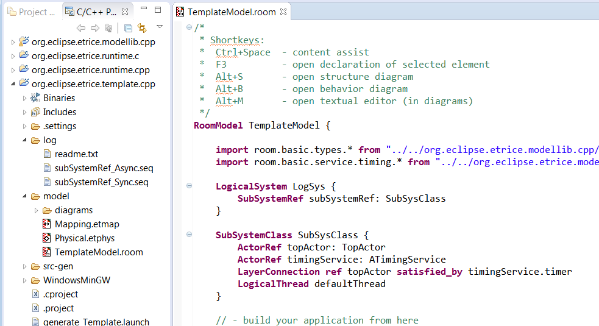
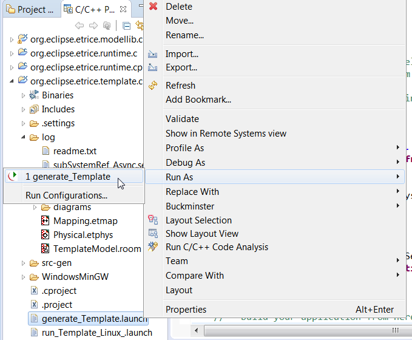
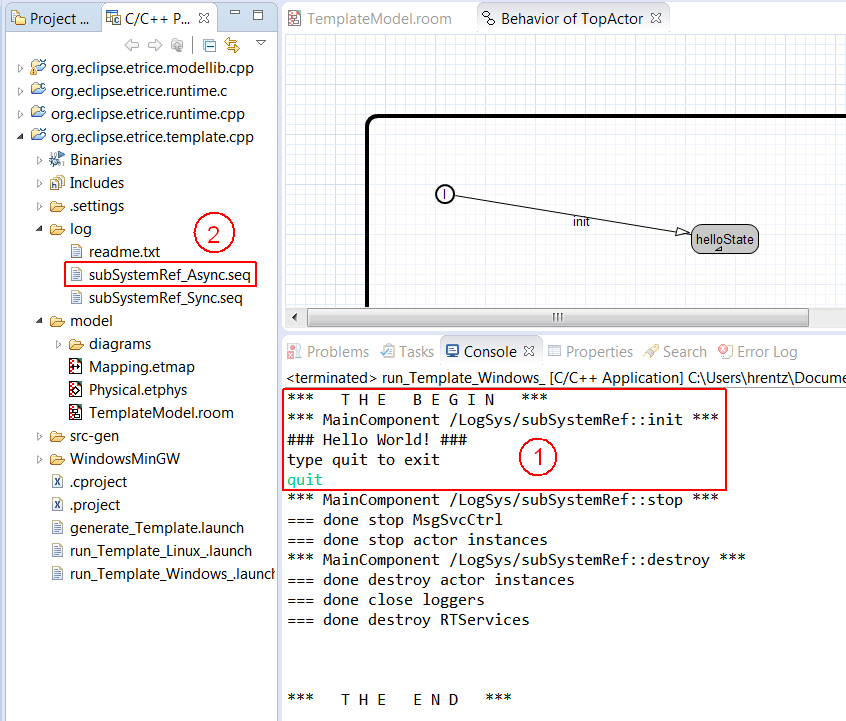
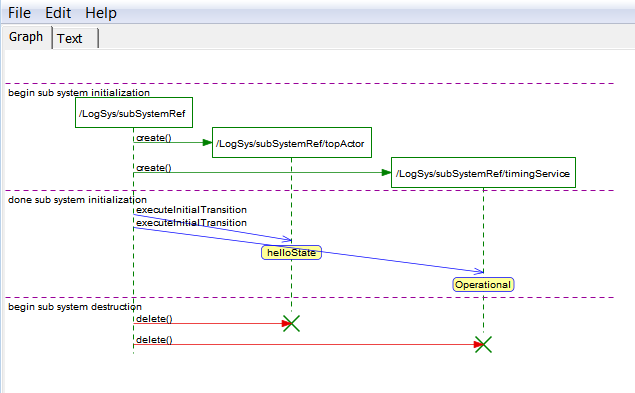

The eTrice tutorials will help you to learn and understand the eTrice tool and its concepts. eTrice supports several target languages.
The Hello World tutorial is target language specific. The other tutorials work for all target languages. Target language specific aspects are explained for all languages. Currently eTrice supports Java and C. C++ generator and runtime are currently prototypes with no tutorials. You should decide for which target language you want to work through the tutorials.
Hello World - Getting Started C
Hello World - Getting Started Java
Ping Pong
Traffic Light (Example)
The tutorials are also available in their finished version and can be added to the workspace via the Eclipse New Wizard ( File -> New -> Other: eTrice C/Java Tutorials ).
The Traffic Light Example in not yet available but will be provided with the next eTrice milestone (TODO: status?).
eTrice generates code out of ROOM models. The generated code relies on the services of a runtime framework (Runtime):
Additional functionality is provided as model library (Modellib):
In this tutorial you will have a first look at a very simple eTrice model. The goal is to learn the work flow of eTrice and to understand a few basic features of ROOM.
Preconditions:
Working C development environment with Eclipse CDT
Activated Build Automatically option in Eclipse: Project -> Build Automatically
Recommended: Activate automatic resource refresh in Eclipse: Window -> Preferences -> General -> Workspace
Optional: Install Trace2UML, an Open Source MSC viewer
Download the setup executable “mingw-get-setup” from here
Run the executable file and follow the prompts given by the install wizard.
When you are prompted to set the installation directory, try not to install it under “Program Files” or “Desktop”. Instead, it is recommended to use the default location specified by the installer, “C:/MinGW”.
In the basic setup tab, mark all packages for installation by right clicking each package and selecting “Mark for installation”.
Once all the packages are selected, click on the menu called “Installation -> Apply Changes”.
When the confirmation window appears, select “Apply”. The package download/installation process will now begin. It should take about 5-10 minutes to completely finish, so ensure that you have a reliable internet connection during this time.
Once the installation process has completely finished, you need to set the environment variable path to include the MinGW directory. Open the windows menu with “windows key”, type “Control Panel” and press Enter.
At the top right of the control panel window there should be a search box. Select it and type “Advanced system settings” and then click on the search result “View advanced system settings”.
Click on “Environment Variables” and double click on the user variable “Path”. In the new Edit environment variable window, enter a new variable under “C:/MinGW/bin” if you used the recommended install path. Otherwise change the install path accordingly. Press OK on all open settings windows to close them.
To verify that your installation is working, run the following commands and confirm that the outputs match as follows. It is possible that a restart may necessary to confirm the changes.
> gcc --version
g++ (GCC) X.X.X
......
> g++ --version
g++ (GCC) X.X.X
......
> gdb --version
GNU gdb (GDB) X.X.X
......
After installation of eTrice in Eclipse, we can use the wizard to create the template.c project, which is a good starting point for new ROOM applications. Select the menu File -> New -> Other (Ctrl+N) and choose eTrice C Template Project. To complete the wizard press Next and on the next page Finish.
This will add the three projects into your workspace:
Now open the TemplateModel.room in the model folder of template.c.

In this step we are introduced to the concept of Actors, a fundamental building block in ROOM, and how they are used in eTrice. In essence, an Actor is a representation of an object as a logical machine with defined behavior. Its structure, behavior and protocols are all defined with in an element called an ActorClass. See here for further information.
The model contains an ActorClass TopActor, which is currently the only active actor. TopActor has a state machine that is intended to output a simple HelloWorld statement. To inspect its behavior graphically, we can open the behavior diagram by right clicking on Outline View -> TopActor -> Edit Behavior. Alternatively we can place the cursor within the textual notation and press Alt+B.

The state machine has an initial transition that leads to helloState. The state defines an entry code, which is executed during the transition. We can view the details by hovering over the state and edit the code with a double-click or right click and Edit State.

Now we are ready to translate the model into an executable application. The first step is to generate source files from the model. Therefore we run the eTrice model generator by right clicking on file
After that we can build and run the application by right clicking on file
This will trigger the build process, carried out by Eclipse CDT and then subsequently start our application.
 |
 |
The output of our application is logged in the Console View and it shows the “Hello World”. By typing “quit” on the prompt and pressing enter the application terminates regularly.

After termination, we can inspect the behavior of our application. It is recorded in the form of a MSC (Message Sequence Chart) and can now be used for debugging or documentation purposes. Open msc.seq or subSystemRef_Async.seq in the folder log using the tool Trace2UML (if the file is not present, try to refresh (F5) the folder log).
Note: The Trace2UML (Open Source tool) download links can be found in the Preconditions of Getting Started.
Yet the MSC is nearly empty having not recorded any interaction between actors. It shows that topActor (full instance path /LogSys/subSystemRef/topActor) has assumed helloState. In the next PingPong tutorial we are going to create a more sophisticated and vivid eTrice application introducing actor building blocks and message protocols.

In this tutorial you will have a first look at a very simple eTrice model.
The goal is to learn the work flow of eTrice and to understand a few basic features of ROOM.
Preconditions:
Working C++ development environment with Eclipse CDT
Activated Build Automatically option in Eclipse: Project -> Build Automatically
Recommended: Activate automatic resource refresh in Eclipse: Window -> Preferences -> General -> Workspace
Optional: Install Trace2UML, an Open Source MSC viewer
After installation of eTrice in Eclipse, we can use the wizard to create the template.cpp project,
which is a good starting point for new ROOM applications.
Select the menu File -> New -> Other (Ctrl+N) and choose eTrice C++ Template Project.
To complete the wizard press Next and on the next page Finish.

This will add four projects into your workspace:
Now open the TemplateModel.room in the model folder of template.c.

In this step we are introduced to the concept of Actors, a fundamental building block in ROOM, and how they are used in eTrice. In essence, an Actor is a representation of an object as a logical machine with defined behavior. Its structure, behavior and protocols are all defined with in an element called an ActorClass. See here for further information.
The model contains an ActorClass TopActor, which is currently the only active actor.
TopActor has a state machine that is intended to output a simple HelloWorld statement.
To inspect its behavior graphically, we can open the behavior diagram by right click on
Outline View -> TopActor -> Edit Behavior. Alternatively we can place the cursor
within the textual notation and press Alt+B.
The state machine has an initial transition that leads to helloState.
The state defines an entry code, which is executed during the transition.
We can view the details by hovering over the state and edit the code with a double-click or
right click and Edit State.
Now we are ready to translate the model into an executable application. The first step is to generate source files from the model. Therefore we run the eTrice model generator by right click on file
After that we can build and run the application by right click on file (depending on your operating system, here we chose Windows).
Note: Using MinGW it is necessary to have <MinGW installation dir>\bin in the system PATH.
Note: Your CDT preferences might not enforce a build before launch. In this case you have to invoke the build before launching.
This will trigger the build process, carried out by Eclipse CDT and then subsequently start our application.
|  |  |
The output of our application is logged in the Console View and it shows the “Hello World”.
By typing “quit” on the prompt and pressing enter the application terminates regularly.

After termination, we can inspect the behavior of our application. It is recorded in the form of a
MSC (Message Sequence Chart) and can now be used for debugging or documentation purposes.
Open subSystemRef_Async.seq in the folder log using the tool Trace2UML
(if the file is not present, try to refresh (F5) the folder log).
Note: The Trace2UML (Open Source tool) download links can be found in the Preconditions of Getting Started.
Yet the MSC is nearly empty having not recorded any interaction between actors.
It shows that topActor (full instance path /LogSys/subSystemRef/topActor) has
assumed helloState. In the next PingPong tutorial we are going to create a more sophisticated
and vivid eTrice application introducing actor building blocks and message protocols.

In this tutorial you will have a first look at a very simple eTrice model. The goal is to learn the work flow of eTrice and to understand a few basic features of ROOM.
Preconditions:
Installed Eclipse JDT
Activated Build Automatically option in Eclipse: Project -> Build Automatically
Recommended: Activate automatic resource refresh in Eclipse: Window -> Preferences -> General -> Workspace
Optional: Install Trace2UML, an Open Source MSC viewer
After installation of eTrice in Eclipse, we can use the wizard to create the template project, which is a good starting point for new ROOM applications. Select the menu File -> New -> Other (Ctrl+N) and choose eTrice Java Template Project. Name the project TemplateModel and press Next. On the next page select use Eclipse JDT build and press Finish.

This will add three projects into your workspace, the library projects runtime.java and modellib.java and our application project TemplateModel. Now open the TemplateModel.room in the model folder of our project.

In this step we are introduced to the concept of Actors, a fundamental building block in ROOM, and how they are used in eTrice. In essence, an Actor is a representation of an object as a logical machine with defined behavior. Its structure, behavior and protocols are all defined with in an element called an ActorClass. See here for further information.
The model contains an ActorClass TopActor, which is currently the only active actor. TopActor has a state machine that is intended to output a simple HelloWorld statement. To inspect its behavior graphically, we can open the behavior diagram by right click on Outline View -> TopActor -> Edit Behavior. Alternatively we can place the cursor within the textual notation and press Alt+B.

The state machine has an initial transition that leads to helloState. The state defines an entry code, which is executed during the transition. We can view the details by hovering over the state and edit the code with a double-click or right click and Edit State.

Now we are ready to translate the model into an executable application. The first step is to generate source files from the model. Therefore we run the eTrice model generator by right click on file
After that we can build and run the application by right click on file
This will trigger the build process, carried out by Eclipse JDT and then subsequently start our application.
|
|
The output of our application is logged in the Console View and it shows the “Hello World”. By typing “quit” on the prompt and pressing enter the application terminates regularly.
After termination, we can inspect the behavior of our application. It is recorded in the form of a MSC (Message Sequence Chart) and can now be used for debugging or documentation purposes.
Open msc.seq or subSystemRef_Async.seq in the folder log using the tool Trace2UML (if the file is not present, try to refresh (F5) the folder log).
Note: The Trace2UML (Open Source tool) download links can be found in the Preconditions of Getting Started.
Yet the MSC is nearly empty having not recorded any interaction between actors. It shows that topActor (full instance path /LogSys/subSystemRef/topActor) has assumed helloState. In the next PingPong tutorial we are going to create a more sophisticated and vivid eTrice application introducing actor building blocks and message protocols.

This tutorial describes how to create a simple hierarchical actor system of actors communicating via ports and bindings.
Additionally you will use the Timing Service from the eTrice model library. This tutorial can be done for the target languages Java, C or C++.
For the Ping Pong scenario we want to create a model with a sender and a receiver of a message. The receiver has to wait for the ping message
from the sender, wait for a second and respond with a pong message.
The resulting Message Sequence Chart (MSC) at the end of this tutorial should look like this:

We will take this MSC as specification for the desired behavior.
We start by opening the TemplateModel.room from the template project as presented in Getting Started. As described previously topActor is currently the only active actor. Furthermore the model provides a building kit for this tutorial, consisting of
ProtocolClass PingPongProtocol: Defining the incoming message ping and outgoing pong according the specification
ActorClass Receiver: Defining a (regular) Port of type PingPongProtocol, which receives the incoming messages and sends the outgoing message. Additionally it has a reference to the TimingService.
ActorClass Sender: Defining the conjugated Port of type PingPongProtocol, which handles the messages vice-versa
ProtocolClass PingPongProtocol {
incoming {
Message ping()
}
outgoing {
Message pong()
}
}
ActorClass Receiver {
Interface {
Port recvPort: PingPongProtocol
}
Structure {
external Port recvPort
SAP timingService: PTimer
}
// ...
}
ActorClass Sender {
Interface {
conjugated Port sendPort:
PingPongProtocol
}
Structure {
external Port sendPort
}
// ...
}
Note: The naming Sender Receiver is based on the first message exchange.
Sender is the first actor supposed to send a message (*ping*) and Receiver is the first actor to receive this message.
Afterwards they change their roles and it is vice-versa for message pong.
Remaining tasks:
creating the hierarchical actor structure by using classes the Sender and Receiver
establish port binding
define the behavior of both actors
use the TimingService
generate and run application, then verify resulting MSC
We are going to create the hierarchical actor structure and TopActor will serve as a pure container actor. Thus its current state machine is obsolete, we can ignore or delete it.
We continue to add the actors graphically and open the structure diagram of TopActor by right-click in the Outline View on TopActor -> Edit Structure.

Drag and Drop an ActorRef from the Palette within the borders and name the new actor reference sender and set the type to ActorClass Sender.
Repeat the step for the receiver of ActorClass type Receiver.

Finally we connect the ports of both actors using the Binding tool in the Palette. Drag a connection between the two ports to establish a Binding.

We will implement two finite state machines (FSMs) to define the event driven behavior of the actor classes Sender and Receiver.
Before you start with the implementation, have a look at the MSC with the specification of the behavior.
Lets start with the Sender. In the structure diagram of TopActor right click on sender and select Open Ref Behavior.

According to our specification:
Sender initially should send the message ping and then assume a state named sendingPing. After receiving the message pong it should switch to a state named receivedPong.
Drag and Drop the Initial Point and a State into the diagram. The latter causes the opening of the dialog Edit State, in which we type the name sendingPing
and specify the entry code senderPort.ping();.
Note that the content assist is activated by pressing CTRL+Space.

In the same manner we create a second State named receivedPong but without any action.
Use the Transition tool to draw the initial transition to sendingPing. The dialog Edit Transition will open and we just click OK as no action is required.
Note that initial transitions do not have any trigger events.
Again draw a transition from sendingPing to receivedPong. In the dialog for this transition we set the trigger event to message pong of port sendPort in the top right corner.

At this point the behavior of Sender is complete and should look like this:

We turn our attention to actor Receiver and open its state machine diagram.
According to the specification:
Receiver initially should wait for the message ping. After a short time the message pong should be sent back.
We create the states waitingForPing, receivedPing and sendingPong plus the initial transition.
We draw a transition from waitingForPing to receivedPing and select as trigger event the message ping of port recvPort.

In the entry code of the state receivedPing we start the timeout by sending the message startTimeout(500) (time unit is ms) to the timingService port:
timingService.startTimeout(500);
We draw a transition from receivedPing to sentPong. The trigger event is the respond timeout of the timing service.

In the entry code of the state sentPong we send the message pong back to the Sender: recvPort.pong();
Now the behavior of Receiver is complete, too. It should look like this:

The PingPong model is done now. You can generate, compile and run it as described in Hello World for C or Hello World for Java. The generated MSC in folder log
should show the same MSC we used to specify the behavior at the beginning of this tutorial.
Within this tutorial you have learned how to create a FSM with transitions triggered by incoming messages. You have used entry code to send messages and have used
the timing service from the model library. You are now familiar with the basic features of eTrice. Further tutorials and examples will assume that the reader is
already familiar with this basic knowledge.
If the application fails to start, look for problems in the code generation and in the build process. Check the respective console for potential errors:
The eTrice C/C++/Java Generator Console outputs any errors, that were detected during generation, like model validation errors or missing imports/references.

The CDT Build Console outputs errors that occurred during the build process.
Common issues:
multiple main functions: More than one executable application was built within a single project. Try a complete clean before rebuild of the project.
compile error in generated user code: Check if the user code, that was generated out of the model causes compiler errors (e.g. state/transition action code or operation detail code).
The default location for the generated code is the folder src-gen.

The MSC is created when the application has been shutdown in proper form, thus has been terminated by typing quit in the Console of the application.
Depending on the Eclipse workspace settings, it might be necessary to refresh (F5) the log folder manually.